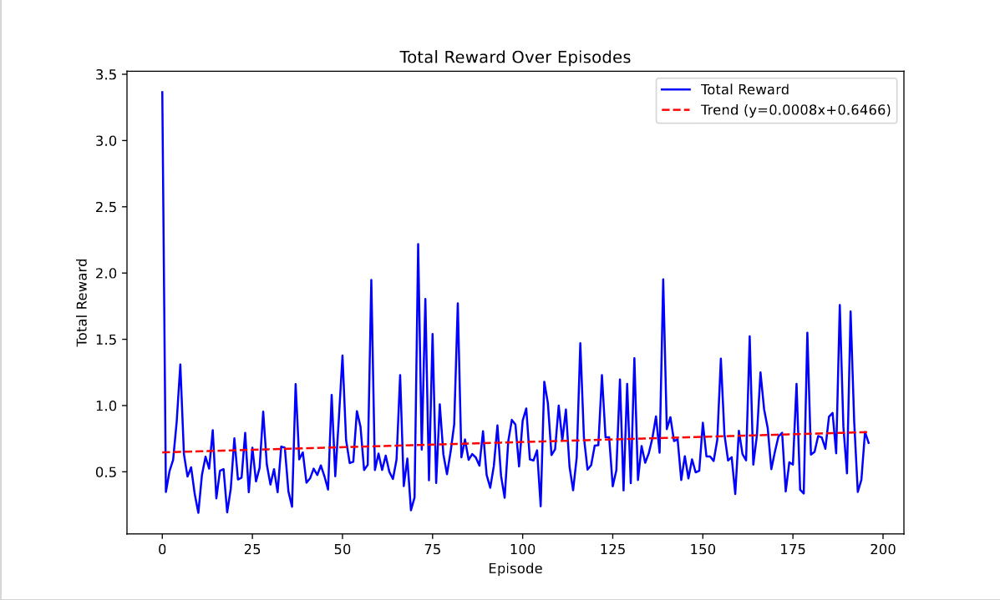
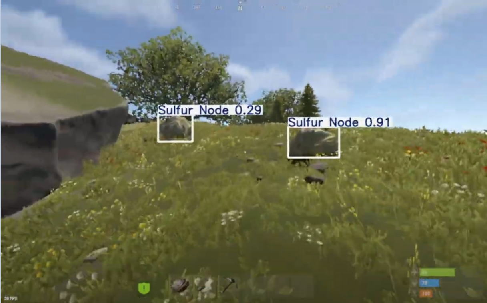
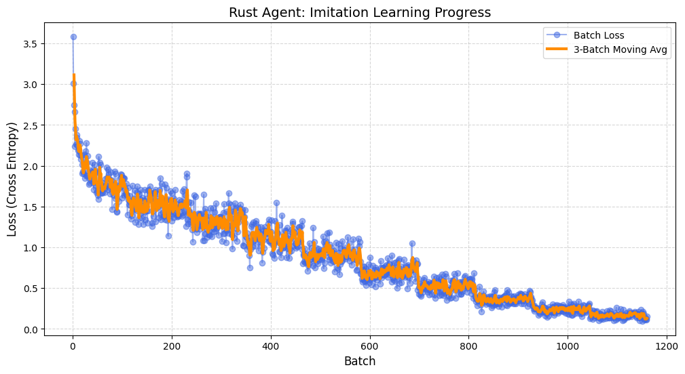

Project Overview
- Designed an RL-vision agent that navigates a real time 3D game environment and gathers resources.
- Trained machine learning model from scratch using 500+ hours of video game footage, using a combination of imitation and reinforcement learning in a custom C# training environment.
Technologies Used
- A frankly embarrassing amount of time and GPU compute
- C#
- Python
- PyTorch
GitHub Repository
Details
This is probably my most ambitious project (and my favorite) to date, so please feel free to ask me about it more because I can yap for hours. I originally started just building a YOLO model to detect resource nodes in Rust, but had done some RL before and decided to extend the project. I had seen OpenAI's paper on training VLM to play Minecraft and wanted to replicate that for Rust, a survival game I played a lot in high school. Starting out, I hit aroadblock pretty quickly: getting a stable training environment since Rust obviously doesn't have an existing gym. To fix that, I spent roughly 2 months writing custom C# plugins from scratch to manage the environment state, record frames, reset the model, and handle map generation. Building out all that infrastructure is something people usually take for granted in standard RL setups so it was a good way to learn about the full RL pipeline.

Tuning the action space took a lot of experimentation across continuous and discrete configurations to map to a very small sequence of actions. To actually get the model learning, I leaned heavily on imitation learning (pure RL-vision is unrealistic unless you happen to have 400GB of VRAM and a distributed training setup I can borrow). I recorded 10 hours of my own gameplay and wrote automation scripts to build a baseline dataset. I then pre-trained the model on that imitation data and fine-tuned it with about 500 to 600 hours of PPO reinforcement learning. As I'm writing this in July 2026, my current model is a little noisy but can consistently navigate to and breaks rock nodes, I'm currently working on making it more consistent across different scenarios.
Once the environment was set up, I found that standard RL frameworks were highly unstable for this kind of visual input. As a note, my agent only takes raw pixel data as input (no access to the physics engine or anything fancy like that). Training a backbone that could process Rust's intense environmental noise has been incredibly difficult. I started with a custom CNN, then tested out ResNet backbones with standard MLPs and recurrent action experts before landing on my current architecture. Right now I am running a YOLO backbone where I pass features from the last layers of the YOLO neck along with outputs from the detection heads. This is good because I'm can fine-tune the visual model to specifically spot the resources the agent needs. From there, the visual data feeds into a GRU acting as the action expert. I also experimented with a lightweight Transformer action expert (SmolVLA inspired), but ended up going with the GRU.

